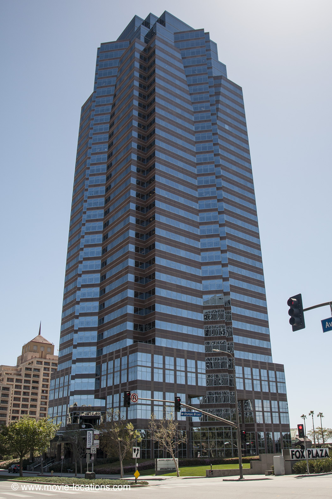

Die Hard
Main Content

It's Christmas, and John McClane (Bruce Willis), armed with little more than a sweaty singlet, saves a Los Angeles office block from a bunch of terrorists. But he can't stop the whole movie from being shamelessly hijacked by Alan Rickman as histrionic, Teutonic villain Hans Gruber.
The ‘Nakatomi Tower’ is the 34-story Fox Plaza, 2121 Avenue of the Stars, part of the Century City complex, where thousands of dollars worth of Italian marble had to be imported to replace glitzy Fox marble chipped during the slam-bang climax.
Century City, a 180-acre complex of malls, towers and entertainment centres, is the chunk of 20th Century-Fox's backlot sold off to cover the company’s losses back in the 1960s, but still regularly pressed into service as a movie backdrop. It’s south of Santa Monica Boulevard, just southwest of Beverly Hills.
Visit Info
Visit The Film Locations
California | Los Angeles
Visit: Los Angeles
Flights: Los Angeles International Airport (LAX), 1 World Way, Los Angeles, CA 90045 (tel: 424.646.5252)
Travelling around: Los Angeles Metro